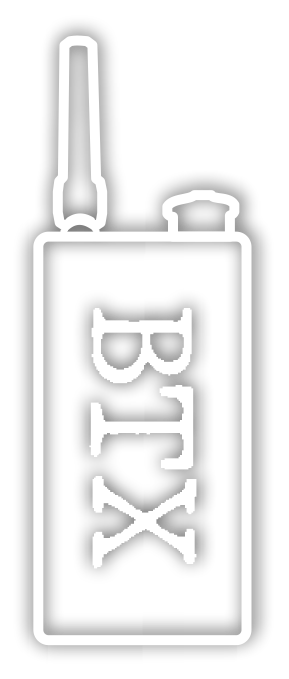

Página Inicial
Configurações avançadas
Perfis de Modo Serial
Perfis de Modo NTRIP
Configurar Canais de radio
Atualização de firmware
Página Inicial
Configurações avançadas
Perfis de Modo Serial
Perfis de Modo NTRIP
Configurar Canais de radio
Atualização de firmware
BTX>02 00:00:00:00:00:00

Website Templates
created with
Website Builder Software
.